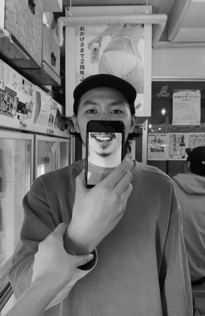

Takayuki Ishii
I’m a Tokyo-based designer specializing in interrelating people and technology through reductive design, code, and experimant.
Currently shaping the future of E-commerce Shopping as the Lead of Design for iOS and Android, also visual communication for branding at BASE .
Outside of my day-to-day, I enjoy traveling and editing videos with my camera-phone.
Find me elsewhere on the web: Twitter , Dribbble , LinkedIn , or e-mail me at ⤷︎ info@takaishii.com .
About
- New Comer at BASE ↗︎ Interview
- About desinging at ookami ↗︎ Interview
- Organizing the mess for designing ↗︎ Session
Projects
-
BASE Rebrand ↗︎ Project
7 years history of BASE created new brand assets for recognizing the powerful impact BASE owners have made through their own brands. In collaboration with Communication Design Team, Sozo Ehara -
Payment Methods for BASE ↗︎ Project
BASE easy-payment has been used for millions owners, including customer. Now payment flow for owners is something had to offer. In collaboration with Payment team at GMO, and Saison -
BASE for iOS and Android ↗︎ Project
Official BASE Shopping app for iOS and Android. In collaboration with Native team, BASE -
BASE Apps ↗︎ Project
The BASE App is used for over 13,000,00 online shops, which is pluging tool for better and easier shop operation. Provided for a various patterns of selling. In collaboration with product Team, BASE -
Player! for ookami ↗︎ Project
Official Player! app for iOS. In collaboration with Riomar Mccartony, Takehiro Koiso, and Nancy Troung, ookami
Other
-
Design Launguage System for iOS and Android ↗︎ Project
Using the same launguage for collaboration keeps us in a good shape. I made Design Launguage System for the team. In collaboration with Native team and Design Team, BASE -
Team Collaboration Methods ↗︎ Collaboration, Process
Thoughts and Methods on design collaboration and process, applied to the Design Team at BASE. In collaboration with Design Team Manager, Special Thanks to all the designers I refered.
↳︎ Footnotes
- This site was intentionally built primitively in plain HTML. No CSS, no JavaScript, no frameworks.
- It’s accessible, responsive and works in all browsers and on all devices.
- To be used as a breather and a reflection on the abundance of modern-day technologies and debates about the right and wrong ways of designing and building for the web.